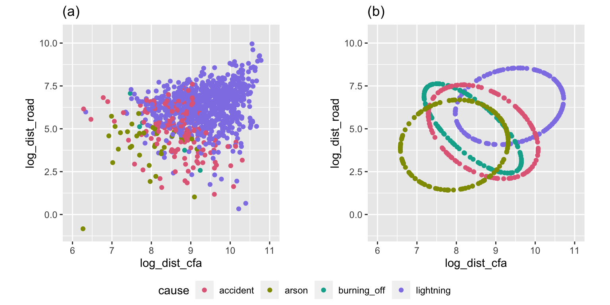

Linear discriminant analysis (LDA) dates to the early 1900s. It’s one of the most elegant and simple techniques for both modeling separation between groups, and as an added bonus, producing a low-dimensional representation of the differences between groups. LDA has two strong assumptions: the groups are samples from multivariate normal distributions, and each have the same variance-covariance. If the latter assumption is relaxed, a slightly less elegant solution results from quadratic discriminant analysis.
Useful explanations can be found in Venables and Ripley (2002) and Ripley (1996). A good general treatment of parametric methods for supervised classification can be found in Johnson and Wichern (2002) or another similar multivariate analysis textbook. It’s also useful to know that hypothesis testing for the difference in multivariate means using multivariate analysis of variance (MANOVA) has similar assumptions to LDA. Also model-based clustering assumes that each cluster arises from a multivariate normal distribution, and is related to LDA. The methods described here can be used to check these assumptions when applying these methods, too..
11.1 Extracting the key elements of the model
LDA builds the model on the between-group sum-of-square matrix
\[B=\sum_{k=1}^g n_k(\bar{X}_k-\bar{X})(\bar{X}_k-\bar{X})'\] which measures the differences between the class means, compared with the overall data mean \(\bar{X}\) and the within-group sum-of-squares matrix,
which measures the variation of values around each class mean. The linear discriminant space is generated by computing the eigenvectors (canonical coordinates) of \(W^{-1}B\), and this is the space where the group means are most separated with respect to the pooled variance–covariance.
Because LDA is a parametric model it is important to check that the assumptions are reasonable:
shape of clusters are elliptical
cluster sizes are the same.
11.2 Checking assumptions
This LDA approach is widely applicable, but it is useful to check the underlying assumptions on which it depends: (1) that the cluster structure corresponding to each class forms an ellipse, showing that the class is consistent with a sample from a multivariate normal distribution, and (2) that the variance of values around each mean is nearly the same. Figure 11.1 and Figure 11.2 illustrates two datasets, of which only one is consistent with these assumptions. Other parametric models, such as quadratic discriminant analysis or logistic regression, also depend on assumptions about the data which should be validated.
Figure 11.1: Scatterplot of flipper length by bill length of the penguins data, and corresponding variance-covariance ellipses. There is a small amount of difference between the ellipses, but they are similar enough to be confident in assuming the population variance-covariances are equal.
Code
# Now repeat for a data set that violates assumptionsdata(bushfires)lda3 <-ggplot(bushfires, aes(x=log_dist_cfa, y=log_dist_road, colour=cause)) +geom_point() +scale_color_discrete_divergingx("Zissou 1") +xlim(6, 11) +ylim(-1, 10.5) +ggtitle("(a)") +theme_minimal() +theme(aspect.ratio =1)b_ell <-NULLfor (i inunique(bushfires$cause)) { x <- bushfires %>% dplyr::filter(cause == i) e <-gen_xvar_ellipse(x[,c(57, 59)], n=150, nstd=2) e$cause <- i b_ell <-bind_rows(b_ell, e)}lda4 <-ggplot(b_ell, aes(x=log_dist_cfa, y=log_dist_road, colour=cause)) +geom_point() +scale_color_discrete_divergingx("Zissou 1") +xlim(6, 11) +ylim(-1, 10.5) +ggtitle("(b)") +theme_minimal() +theme(aspect.ratio =1)ggarrange(lda3, lda4, ncol=2, common.legend =TRUE, legend ="bottom")

Figure 11.2: Scatterplot of distance to cfa and road for the bushfires data, and corresponding variance-covariance ellipses. There is a lot of difference between the ellipses, so it cannot be assumed that the population variance-covariances are equal.
This approach extends to any dimension. We would use the same projection sequence to view both the data and the variance-covariance ellipses, as in Figure 11.3. It can be seen that there is some difference in the shape and size of the ellipses in some projections, as there is with the spread of points in the projected data. However,
library(tourr)library(mulgar)p_ell <-NULLfor (i inunique(penguins_sub$species)) { x <- penguins_sub %>% dplyr::filter(species == i) e <-gen_xvar_ellipse(x[,1:4], n=150, nstd=1.5) e$species <- i p_ell <-bind_rows(p_ell, e)}p_ell$species <-factor(p_ell$species)load("data/penguins_tour_path.rda")animate_xy(p_ell[,1:4], col=factor(p_ell$species))render_gif(penguins_sub[,1:4], planned_tour(pt1), display_xy(half_range=0.9, axes="off", col=penguins_sub$species),gif_file="gifs/penguins_lda1.gif",frames=500,loop=FALSE)render_gif(p_ell[,1:4], planned_tour(pt1), display_xy(half_range=0.9, axes="off", col=p_ell$species),gif_file="gifs/penguins_lda2.gif",frames=500,loop=FALSE)
(a) Data
(b) Variance-covariance ellipses
Figure 11.3: Checking the assumption of equal variance-covariance matrices for the 4D penguins data.
11.3 Examining results
The boundaries for a classification model can be examined by:
generating a large number of observations in the domain of the data
predicting the class for each
We’ll look at this for 2D using the LDA model fitted to bl, and bd of the penguins data.
The fitted model parameters are the means: \(\bar{x}_{Adelie} = (\) -0.95, 0.6\()^\top\), \(\bar{x}_{Chinstrap} = (\) 0.89, 0.64\()^\top\), and \(\bar{x}_{Gentoo} = (\) 0.65, -1.1\()^\top\).
The boundaries can be examined using the explore() function from the classifly package, which generates observations in the range of all values ofbl and bd and predicts their class. We can overlay the sample means and an ellipse corresponding to the variance-covariance also, by extracting these from the model object.